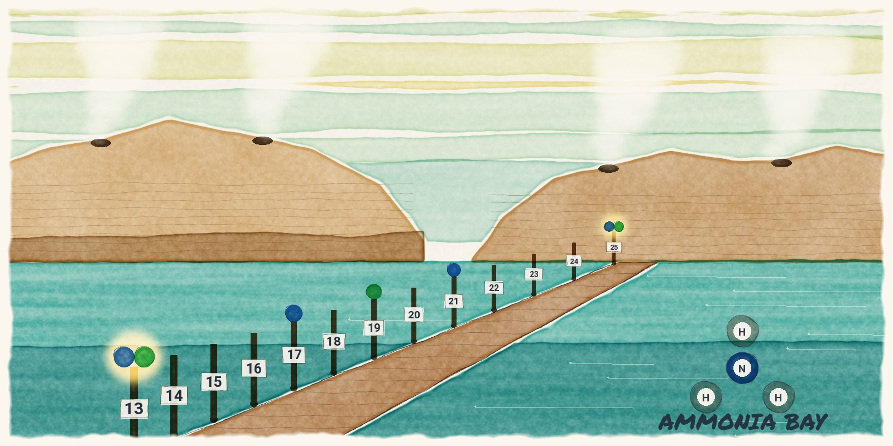

A harbor that stings the eyes, a second Book, and two Book-keepers who have not spoken in forty years.
The ship noses into a yellow fog. The air smells like a cleaning closet. Two towers face each other across the harbor, each with a lit window.
Lucía: Ammonia. One nitrogen, weight seven, and three hydrogens. Same rule as home: all three equal, all even.
Mateo: So their Book is 7 + 2 + 2 + 2 = 13, then 19, then 25… every six.
A lantern swings down from the left tower on a rope. A note is tied to it.
Sofía (reading): "The Keeper of Water and I once shared a page. Since then, nothing. Tell me: will our Books ever meet again?"
Kevin: Forty years of silence over arithmetic.
Ana: Then let's give them an answer they can't argue with.
Each Book starts at a weight and climbs by a step. Shared weights light up.
Sections marked Core are taught on both schedules. Semester sections are taught in class on the semester schedule and are reading on the quarter schedule. Optional code quests can replace Navigator problems on either schedule. On the quarter schedule, Lab notes, Paradox notes, puzzles, Studio corners, strategy questions and Navigator or Cartographer problems are extensions students choose.
Each session is 50 minutes. Both full schedules
Water's Book is 9, 13, 17, … (start 9, step 4). Ammonia's Book is 13, 19, 25, … (start 13, step 6), because 7 + 3h grows by 6 when each hydrogen grows by 2.
Mark how sure your crew is before reading the theory. Vault card V2 from Chapter 1 is opened in this chapter too.
A Book with start s and step d > 0 is the arithmetic progression s, s + d, s + 2d, …. A number x is in it exactly when x ≥ s and d | x − s.
For positive integers a, b: gcd(a, b) is the largest integer dividing both, and lcm(a, b) is the smallest positive integer that both divide. For example gcd(4, 6) = 2 and lcm(4, 6) = 12.
Every common multiple of a and b is a multiple of lcm(a, b).
Proof. Let L = lcm(a, b) and let M be a common multiple. Divide: M = qL + r with 0 ≤ r < L (Theorem 1.1). Both a and b divide M and qL, so they divide r. If r > 0 it would be a positive common multiple smaller than L. So r = 0.
If x is in two Books with steps d and e, then the shared weights from x on are exactly x, x + L, x + 2L, …, where L = lcm(d, e).
Proof. A number y ≥ x is in both Books exactly when d | y − x and e | y − x (it is already past both starts). By Theorem 2.1 that happens exactly when L | y − x.
If the Books with starts s, t and steps d, e share a weight, then gcd(d, e) divides s − t.
Proof. If s + id = t + je, then s − t = je − id. Let g = gcd(d, e). It divides d and e, so it divides je − id.
Using it backwards (the contrapositive): if gcd(d, e) does not divide s − t, the Books never meet. For 4n + 1 and 4n + 3: gcd(4, 4) = 4 does not divide 2. Vault card V2 is broken.
gcd(4, 6) = 2 divides 13 − 9 = 4, and 13 is in both Books. By Theorem 2.2 the shared weights are 13, 25, 37, 49, …: every 12, the weights that leave remainder 1 when divided by 12.
The Keepers' question has an answer: their Books meet again every 12 pages of weight, forever. The converse of Theorem 2.3 (if the gcd divides the difference, the Books do meet) waits in the Vault for Chapter 3.
Question. Find gcd(24, 36) and lcm(24, 36).
Solution. Divisors of 24: 1, 2, 3, 4, 6, 8, 12, 24. Divisors of 36: 1, 2, 3, 4, 6, 9, 12, 18, 36. The largest shared one is 12. Multiples of 36: 36, 72, … and 72 is the first one that 24 divides. So gcd = 12 and lcm = 72.
Question. Do the Books (start 3, step 4) and (start 5, step 6) meet?
Solution. List them: 3, 7, 11, 15, … and 5, 11, 17, … They meet at 11, and then every lcm(4, 6) = 12 (Theorem 2.2): 11, 23, 35, …
Question. Do 4n + 1 and 4n + 3 ever share a number?
Solution. The steps have gcd 4, and the starts differ by 2. Since 4 does not divide 2, Theorem 2.3 says never.
Type an answer and press Check. A hint appears if it is not right yet.
Two Books appear. Find the first weight they share, or call "never". In class, crews race on whiteboards and must justify "never" with Theorem 2.3 before it counts.
Listing both Books works, but it is slow when the steps are large. Once you know the Books meet, how can you find the first shared weight faster? (You will have a fast method in Chapter 7.)
Where do these Books first meet?
Streak: 0
Calendars are Books. A week repeats every 7 days and a month pattern repeats on its own cycle; asking when a date falls on the same weekday again is a collision question. The Maya Tzolk'in pairs 13 day numbers with 20 day names. Because 13 and 20 share no factor, every number meets every name, and the cycle closes after 13 × 20 = 260 days. In Chapter 7 you will meet its partner, the 365-day Haab', and a much harder collision.
Ammonia feeds the world. Since Fritz Haber and Carl Bosch learned to make ammonia from the air in the early 1900s, it has become the base of most nitrogen fertilizer, and by common estimates close to half of the world's people are fed by crops grown with it.
And it travels. Rain washes extra fertilizer into storm drains and rivers, such as the Santa Ana River, where it feeds algae that use up the water's oxygen.
Short answers for every Deckhand problem and hints for the Navigator problems open with a click. For unlimited drills with instant checking, use the Practice Deck.
These cells run real Python in your browser. The first run loads Python (about 10 MB, once).
When do two Books meet? Hear it on the multiples machine (water and ammonia meet every 12 beats; some Books never meet), clap it in phase clapping, or see it as petals in the Gear Shop.
Where gcd and lcm are used: cicada broods that meet every 221 years, gears that wear evenly, and lights that blink together. Open the Field Station
Two lanterns swing out over the harbor at the same moment. Somewhere in the fog a door opens. The crew is already gone, following a column of sparks on the horizon: an island where, they say, the smiths can balance anything.